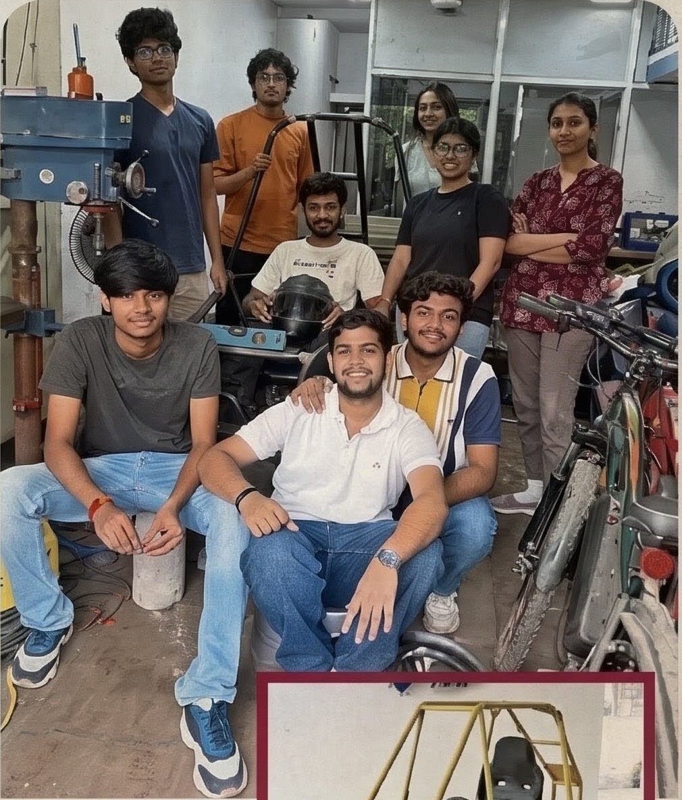
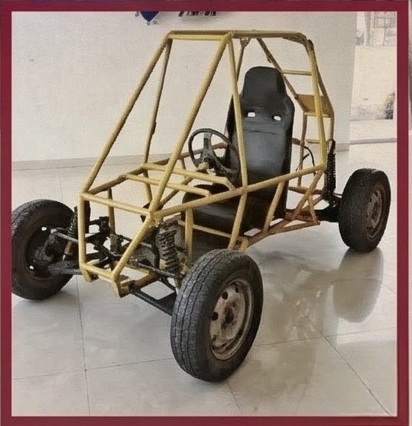

News feature
SCET Students Build an Off-Road Electric Car in Five Months
Surat, Gujarat: Students from SCET College built an off-road-capable electric car in five months as part of the “Mini Baja SAE Club” initiative. The project gave participating students hands-on experience in vehicle manufacturing, fabrication, tools and machinery, alongside the technical skills needed for competitions.

Learning vehicle fabrication through a real build
Rather than learning only from theory, students took part in the vehicle’s fabrication and learned to use workshop tools and machinery during the five-month build. The project connected mechanical and electrical engineering practice with vehicle manufacturing and competition preparation.

Student team and faculty guidance
The students named in the newspaper report are Ayush Patel, Sachi Chudasama, Manya Padshah, Janki Patel, Devam Parekh, Om Sonani, Sahil Purohit, Varni Dhamelia and Nitant Desai. Faculty members Samip Shah, Shabbir Bohra and Amit Patel guided the project in collaboration with the Master Research and Development Institute (MRDI).
About the ARKA SAE Mini Baja project
ARKA is MRDI’s hands-on SAE Mini Baja prototype consultancy and student training project. It supports practical learning through designing, fabricating and assembling a vehicle prototype. The SCET build shows how project-based engineering learning can help students apply mechanical and electrical concepts in a workshop setting.
Frequently asked questions
What did SCET students build in Surat?
They built an off-road-capable electric car through the Mini Baja SAE Club initiative.
How long did the ARKA Mini Baja build take?
The reported build took five months.
Where did the students receive project guidance?
The project was guided by faculty members Samip Shah, Shabbir Bohra and Amit Patel, in collaboration with MRDI in Surat, Gujarat.
What practical skills did students gain?
The report describes hands-on participation in vehicle fabrication and learning to use tools and machinery, along with vehicle manufacturing and competition-related technical skills.
Coverage source: Divya Bhaskar, Surat-City Bhaskar, dated 7 November 2026. This MRDI feature summarizes the reported project details.